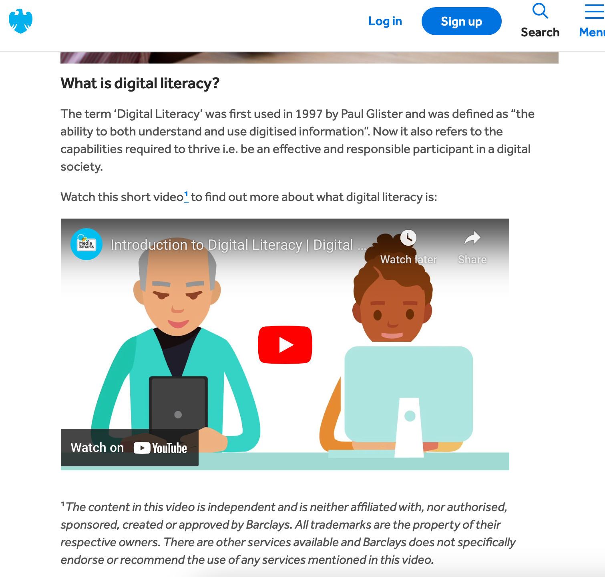

IL: Task 2
Selected website: Barclays Digital Wings


Use of images on the sites are ineffective as they are basic images of people staring at devices. They add no sense of visual aid but just work for the sake of having images on the page so there isn’t just a page of plain text. The images also though have people holding a piece of technology don’t correctly align with the purpose of the website.
They do however include an interesting video with better visual representation of what the website is trying to communicate. Perhaps just screenshots from this view as images on the site would have proven much more appropriate that the lazier images.